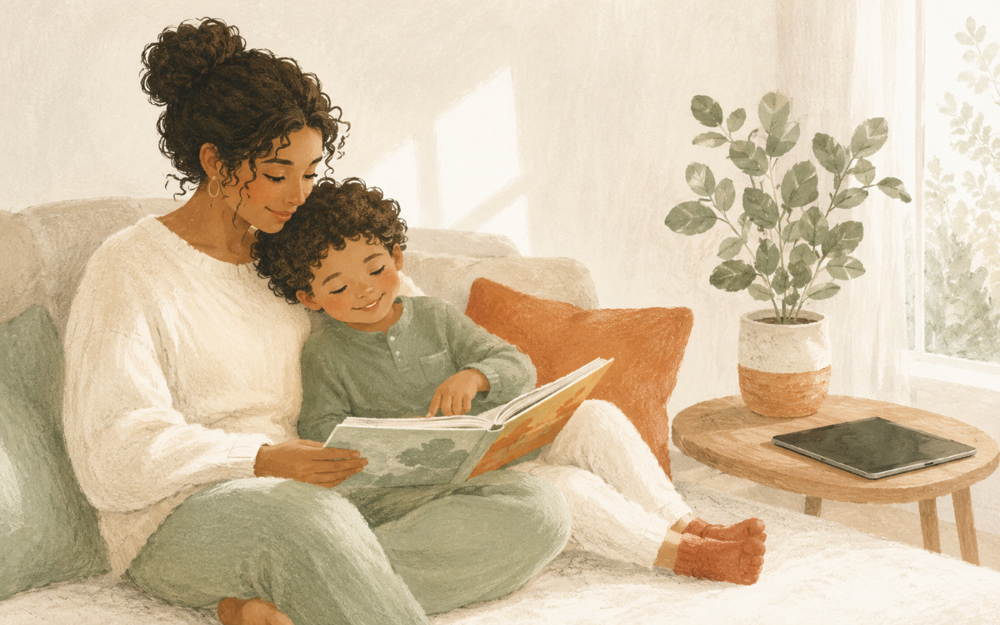
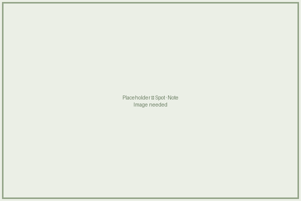
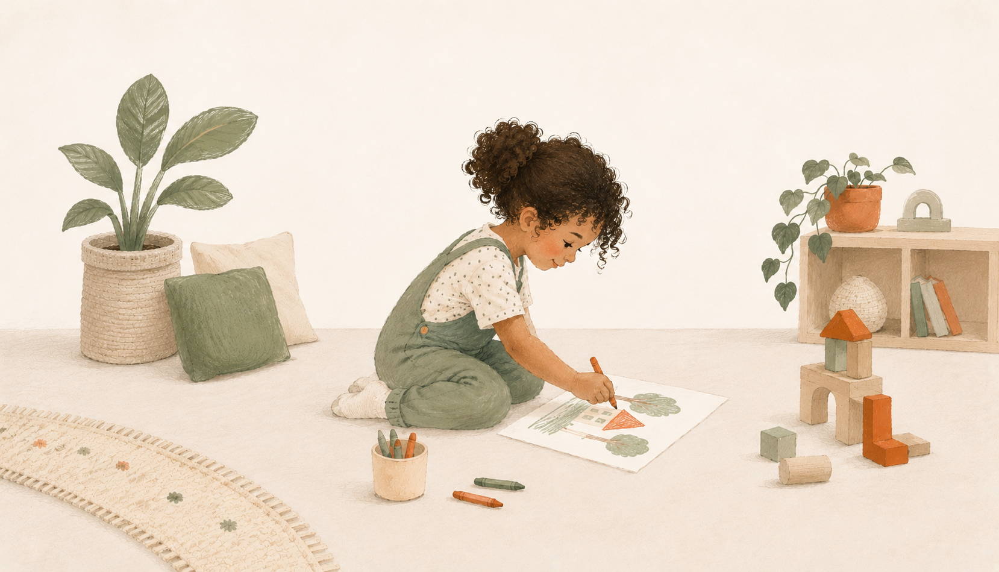
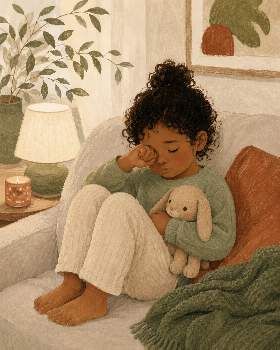
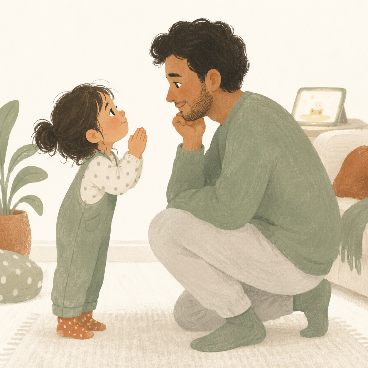
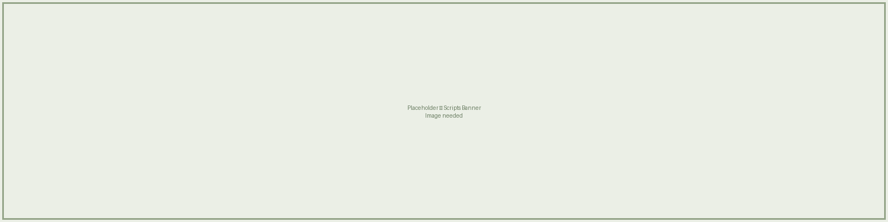
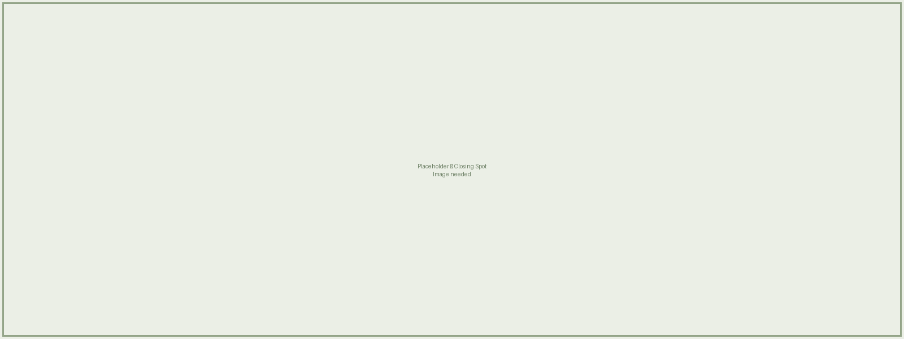

What actually works — and what to do about it

Screen time is one of the most guilt-laden topics in parenting right now. Every article seems to contradict the last one. Too much screen time ruins your child. A little educational TV is fine. Screens are toxic. Screens are just a tool.
The truth is more useful than the noise. This guide cuts through it — what the research actually says, by age, and what you can practically do about it.
No judgment. Just clarity.
The honest version
For years, the guidance on screen time was simple: none before age 2, one hour maximum for under-5s. The American Academy of Pediatrics (AAP) has since updated its position, and the shift is worth understanding.
The latest AAP guidance moves away from strict time limits toward something more nuanced: quality, context, and balance matter more than minutes alone.
A child watching an educational program with a parent who talks about what’s happening is in a completely different situation than a child passively scrolling alone for the same amount of time. The research reflects this. It’s not just about how long — it’s about what, with whom, and what it replaces.
It’s not about hitting a perfect number.
It’s about balance.
What the guidelines say — and why
The AAP recommends no screen time at all for children under 18 months — with one exception: video calls with family. This isn’t arbitrary. At this age, children learn almost entirely through hands-on, real-world interaction with people. Research shows babies learn poorly from screens compared to a real person — even when the content is identical.
Background television counts, too. Studies show that a TV on in the background — even if no one is watching — disrupts attention and language development in babies and toddlers.
This is one of the harder guidelines to follow, especially when you’re exhausted and a screen buys you ten minutes. You’re not failing if you use it occasionally. The guideline is about habit, not the occasional exception.
High-quality programming can be introduced from 18 months — but what you do while watching matters. Sit with your child. Talk about what you’re seeing. That’s the difference between passive consumption and something your child actually learns from. The WHO recommends keeping it under one hour a day, and less is better.

Up to one hour a day of high-quality content. Choose slow-paced, age-appropriate programs over fast-paced or interactive content designed to keep children engaged rather than teach them anything. Watching together still matters: when you sit down and talk about what’s on, children retain more — and it becomes more like reading together than passive TV.
Try to pair screen time with something active afterward — a walk, outdoor play, or even just drawing. This keeps screens from crowding out the physical activity young children need every day.
The AAP recommends consistent limits but doesn’t specify a number. The practical test is whether screen time is displacing what matters: sleep, physical activity, homework, and time with family and friends. Under two hours of recreational screen time a day is a reasonable benchmark for this age group — separate from any school-related use.
Is my child choosing screens over everything else? If the answer is consistently yes, the balance is off — sleep, play, and family time are getting squeezed out.
The number is a guide.
What it replaces is the real question.
What to watch for

More screen time isn’t always the problem — but these signs suggest it might be:
Difficulty stopping. Strong emotional reactions when screens go off — beyond normal transition frustration — can signal that screens have become the main way your child copes with every hard feeling: boredom, frustration, tiredness.
Sleep problems. Screens before bed delay the onset of sleep and reduce its quality. The stimulating nature of most content is the main factor, with light exposure also playing a role. If falling asleep is a struggle, look at screens within the hour before bed first.
Reduced interest in other activities. If your child consistently refuses play, outdoor time, or activities they used to enjoy in favor of screens, that’s a pattern worth addressing.
Mood changes after screen time. Unusually moody, aggressive, or hard to settle after screens — particularly after fast-paced games or videos — is a pattern worth taking seriously.
Hiding screen use. If your child is concealing their screen use, the boundary has broken down and needs resetting — calmly, and without shame.
These aren’t reasons for guilt — they’re useful information. The sections ahead cover why stopping is hard and what genuinely helps.
Why it happens — and what to do

This is the most common screen time struggle parents face — and it has a straightforward explanation.
These platforms are built to keep your child watching. That’s not an accident — it’s the design. Games, videos, and apps are specifically built to make stopping feel difficult. This isn’t a character flaw in your child. It’s the point.
On top of that, young children live in the present. Being told to stop something enjoyable feels like a real loss. Add an engaging screen to an underdeveloped ability to regulate emotions, and you’ve got a reliable meltdown waiting to happen.
“Ten more minutes, then we’re turning it off.” → “Five more minutes.” → “One more minute, then done.” This reduces the shock of stopping and gives your child time to prepare. It won’t eliminate protest — but it lowers it.
A timer they can see removes the negotiation. When it goes off, the timer said so — not you.
Stopping mid-episode is harder than stopping when something finishes. Where you can, plan screen time around natural end points.
If “five more minutes” becomes ten, then fifteen, children learn that the boundary is a starting point for negotiation. State it clearly and follow through calmly — every time.

“I know you’re not ready to stop. The timer says it’s time. We can watch again tomorrow.”
“It’s hard to stop when it’s fun. That’s okay. Screens are done for now.”
“You can be upset about it and still turn it off. I’ll help you.”
“I hear you. The answer is still no more screens today.”
“The rule doesn’t change because it’s hard. That’s what makes it a rule.”
“We can talk about it when screens are off. They’re off now.”
You’re not fighting your child.
You’re both up against the design.
A practical approach
Parental screen habits are one of the strongest predictors of children’s. If you want screens down at dinner, put yours down first. Not about being perfect — about being consistent enough that the rule makes sense.
Children do better with specific expectations than vague ones. “One show after school” is easier to enforce than “not too much.” Pick a rule that works, and state it the same way every time.
Screens in common areas — not bedrooms — make content and limits easier to manage. The AAP specifically recommends no screens in children’s bedrooms, particularly at night.
Mealtimes and the hour before bed are the two that matter most. Meals are prime for family conversation; screens before bed reliably affect sleep quality.
When screens become the main reward, everything else loses value. When they’re the main punishment, turning them off becomes a bigger deal than it needs to be. They work best as a neutral, predictable part of the day.
Start with one. Consistency with one rule beats good intentions about five. The next page is a printable agreement you can fill in together.
Fill this in together — or use it as a starting point for your own family rules. For younger children, you set the rules and explain them simply. For older children, involving them makes it far more likely they’ll follow them.
On school days, screen time is:
On weekends, screen time is:
Screens are always off during:
Screens stay in these rooms only:
When screen time is over:
We agree to these rules:
Review this together every few months — what works at age 4 won’t be the same at age 8.

There’s no parent who gets this right every day. What matters is that you’re paying attention, setting some boundaries, and adjusting as your child grows.
The research doesn’t say screens are the enemy. It says balance matters, quality matters, and your involvement matters more than most parents realize. Sitting down to watch something with your child — and talking about it — changes what that screen time actually does.
You picked up this guide because you care about getting it right. That’s already more than most.
© Parent Field Guide. All rights reserved.
№ 01 in The Calm Parenting Series